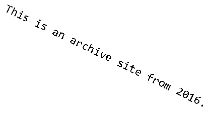

Toggle navigation
Home
Join or Donate
Map
Contact
More
Old Fashion Day
Adopt a Hwy
Post Archive
Hike
Photos
Events
Documents
About Us
Friends of Morrow Mountain State Park
Morrow Mountain State Park original boat rental building from Lake Tillery. - March 23rd, 2007
2016 Winter Meeting Minutes
A complete report on the Winter Meeting by Secretary Tanya Davis.